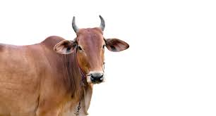

Arthi's Favorite Domestic Animal
My name is Arthi,and my favorite domestic animal is cow.
There are more than 1000 cow breeds in the world. Cows are the female mammal, and the male cow is called the Ox or Bull. A male cow's child is known as a 'Calf,' while a female cow's child is known as a 'Heifer. ' Like most animals, cows have two eyes and ears, a nose, a long tail, four limbs, and two sharp horns.
Cows are domesticated animals and often chew grass in farmers' fields.
wikipedialink

Cows are very essential animal....
- Cows can see almost 360 degrees, but not very well straight in front of them
- Cows are highly sensitive, social, and unique animals who remember people who have been unkind to them.
- It gives milk,Milk is better for cooling your mouth after eating spicy food.
Cow is god for Farmers....
- The natural yellow color of butter comes mainly from beta-carotene found in the grass the cows graze on.
- It provides a maximum requirement for farming activities and helps in the transportation of goods.
- A cow is a domestic animal. Cows are one of the most innocent animals who are very harmless.